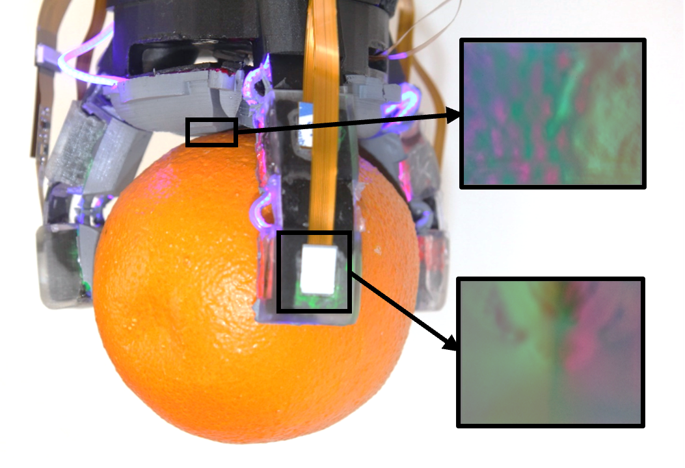

Sandra Q. Liu
and Edward H. Adelson
IEEE International Conference on Robotics and Automation (ICRA) 2024
Also presented at an ICRA 2024 Workshop on End-Effectors

The development of a novel compliant high-resolution tactile "GelPalm" with modular tactile fingers, allowing the hand to grab various objects and see the contact surfaces. Also includes the design of a Flexible lighting system for the GelSight-inspired sensors, with the idea that they can easily be integrated into other soft robotic systems.
News Video Arxiv
Yuxiang Ma*, Arpit Agarwal*,
Sandra Q. Liu*,
and Edward H. Adelson
IEEE International Conference on Soft Robotics (RoboSoft) 2024
A framework which allows users to rapidly design different compliant high-resolution tactile fingers, simulate the tactile images, tweak the designs, and then fabricate the fingers.
Sandra Q. Liu,
Yuxiang Ma,
and Edward H. Adelson
Conference on Robot Learning (CoRL) 2023 Workshop on Learning for Soft Robots
Using the GelSight Baby Fin Ray, which is a compliant finger with GelSight-inspired sensors, to classify nut shell textures and determine forces imparted on the finger.
Sandra Q. Liu*,
Leonardo Zamora Yañez*, and
Edward H. Adelson
IEEE International Conference on Soft Robotics (RoboSoft) 2023
Winner of Best Student Paper Award
Designing soft robotic fingers with internal skeleton structures and continuous high-resolution tactile sensing along their entire lengths and sides. The fingers are then placed into a hand to demonstrate that it can identify objects with just one grasp.
Sandra Q. Liu,
Yuxiang Ma
and Edward H. Adelson
IEEE International Conference on Soft Robotics (RoboSoft) 2023
A miniaturization of the GelSight Fin Ray using a novel synthesized fluorescent silicone paint, giving the resulting finger a compact and more flexible design. The camera is moved to the base of the finger and looks at a compliant mirror surface on the back of the finger.
Sandra Q. Liu
and Edward H. Adelson
IEEE International Conference on Soft Robotics (RoboSoft) 2022
The first development of a flexible GelSight-inspired sensor, done in a Fin Ray finger form factor. Introducing the fluorescent paint allows the sensor to only use the blue LED color and still obtain the red, green, and blue channels in the tactile images. The resulting system is able to 3D reconstruct tactile images and also perform tasks such as reorienting and gently placing down a wine glass on the table.
Yu She*,
Sandra Q. Liu*,
Peiyu Yu*, and Edward H. Adelson
*denotes equal contribution
IEEE International Conference on Robotics and Automation (ICRA) 2020
Manufacturing a soft finger with an exoskeleton and embedded camera. The camera is able to see tactile images, classify box/cylindrical objects, and also estimate the finger's shape.
MIT Abstracts [October 2024]
Bristol Softlab Seminar [September 2024]
Williams College Computer Science Colloquium [May 2023]
CMU Robotics Institute Seminar [August 2022]
PhD Thesis, Massachusetts Institute of Technology, January 2024
Master's Thesis, Massachusetts Institute of Technology, June 2020